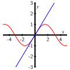

What is the Taylor series centered at \(a\) of a function \(f\text{?}\)
What does it mean for an infinite Taylor series to converge to a finite sum, and how can we determine \(x\)-values for which the series converges?
What are the Taylor series centered at \(a = 0\) for \(\frac{1}{1-x}\text{,}\)\(\ln(1+x)\text{,}\)\(\sin(x)\text{,}\)\(\cos(x)\text{,}\) and \(e^x\text{,}\) and for which \(x\)-values do these series converge?
In Activity 8.3.4, we investigated several Taylor polynomials centered at \(0\) for the function \(f(x) = \frac{1}{1-x}\) and found that
Moreover, we saw that it is natural to extend the degree \(n\) Taylor polynomial to an infinite Taylor series 1 ; for \(f(x) = \frac{1}{1-x}\text{,}\) the corresponding Taylor series is
Because \(T(x)\) is an infinite geometric series with \(a = 1\) and \(r = x\text{,}\) whenever \(|r| = |x| \lt 1\text{,}\) the series converges and by Equation (8.3.12) its sum is
Remarkably, this shows that the original function, \(f(x) = \frac{1}{1-x}\text{,}\) is equal to its Taylor series for all values of \(x\) that satisfy \(|x| \lt 1\text{.}\) So, not only do Taylor polynomials provide increasingly better approximations to a function as the degree \(n\) increases, but it appears that if we let \(n\) increase without bound we arrive at a new representation of the original function through its Taylor series 2 .
In Preview Activity 8.4.1, we consider an infinite geometric series and explore the function to which the series is related and that function’s Taylor polynomials.
Show that \(T(x)\) is a geometric series by identifying the values of \(a\) and \(r\text{.}\)
\(a={}\) and \(r={}\)
(b)
Use the formula for the sum of an infinite geometric series to find a single fraction that represents the value of \(T(x)\text{.}\)
For which values of \(x\) is this representation valid?
Use interval notation.
(c)
Consider the function \(f(x) = 9(3 + x)^{-1}\) and fill out the table below.
Use your answers to calculate the degree \(3\) Taylor polynomial centered at \(0\) for \(f(x)\text{.}\)
(d)
How is your work in part (c) connected to the original given series \(T(x)\text{?}\)
It’s the same.
The Taylor polynomials of \(f(x)\) are partial sums of the original infinite geometric series.
No relation.
Subsection8.4.1Taylor series and the Ratio Test
From our work in Activity 8.3.4 and Preview Activity 8.4.1, we have seen two examples where the Taylor polynomials of a given function lead to a corresponding infinite Taylor series that is actually equal to the original function itself. This suggests that Taylor series are important because they give rise to a polynomial-like representation of a non-polynomial function. We are now ready to formally define the Taylor series of a function and then introduce a tool for determining where the Taylor series converges.
Definition8.4.1.
Let \(f\) be a function such that \(f^{(n)}(a)\) exists for every natural number \(n\text{.}\) The Taylor series for \(f\) centered at \(x=a\) is the series \(T_f(x)\) defined by
As we noted earlier in Equation (8.4.1), because this particular series is geometric (with common ratio \(r = x\)), we are able to easily find a shortcut formula for its value and understand the values of \(x\) for which the infinite sum makes sense. In particular, for \(|x| \lt 1\text{,}\)
which shows that the Taylor series is equal to the original function \(f(x)\) for this set of \(x\) values.
It turns out that while most Taylor series are not geometric series, we can compare any Taylor series to a geometric series in order to determine an interval of \(x\)-values for which the Taylor series converges. To see how we approach this issue, we consider a particular function for which we know its Taylor polynomials and determine the \(x\)-values for which its Taylor series should converge.
We let \(f(x) = \ln(1+x)\) and work to determine whether or not the Taylor series is geometric in order to investigate the \(x\)-values for which the series appears to converge. In Example 8.2.6, we found that the general degree \(n\) Taylor polynomial centered at \(a = 0\) for \(f(x) = \ln(1+x)\) is
Unlike the Taylor series for the function \(\frac{1}{1-x}\text{,}\) the Taylor series for \(f(x) = \ln(1+x)\) turns out to not be geometric, so we introduce some new ideas to think about the \(x\)-values for which we expect the series to converge.
For a series to be geometric, it must have a constant ratio between the terms. In \(T_f(x)\text{,}\) the general \(n\)th term is
This tells us the series \(T_f(x)\) is not geometric since the ratio of consecutive terms depends on \(n\text{.}\) For example, if we take \(n = 2\text{,}\) we have
is the ratio between the fourth and third terms. Since the ratio \(r_n(x)\) depends on \(n\text{,}\) the series lacks a common ratio between terms.
However, as \(n\) gets large, the series \(T_f(x)\) is almost geometric. This is because the quantity \(\frac{n}{n+1}\) approaches \(1\) as \(n\) increases without bound, and therefore for large \(n\text{,}\)
This suggests that the series \(T_f(x)\) converges for \(|r_n(x)| \approx |-x| = |x| \lt 1\text{,}\) since the series is very close to being geometric with a common ratio \(-x\text{.}\) Graphical evidence supports the conclusion that for \(|x| \lt 1\text{,}\) the series \(T_f(x)\) converges in the same way that a geometric one would, and also that the interval of convervence is \(-1 \lt x \lt 1\text{.}\) In Figure 8.4.2, we plot \(f(x) = \ln(1+x)\text{,}\)\(T_{10}(x) = x - \frac{1}{2}x^2 + \cdots - \frac{1}{10}x^{10}\text{,}\) and \(T_{20}(x) = x - \frac{1}{2}x^2 + \cdots - \frac{1}{20}x^{20}\text{.}\)
Figure8.4.2.The function \(f(x)=\ln(1+x)\) and its degree \(10\) and \(20\) Taylor polynomial approximations \(T_{10}(x)\) and \(T_{20}(x)\) near the point \((0,f(0))\text{.}\)
In Figure 8.4.2 we see that on the interval \(-0.8 \lt x \lt 0.8\text{,}\)\(f(x)\text{,}\)\(T_{10}(x)\text{,}\) and \(T_{20}(x)\) are nearly indistinguishable. Furthermore, we see that if we widen the interval to \(-0.9 \lt x \lt 0.9\text{,}\)\(T_{20}(x)\) remains a very good approximation of \(f(x)\text{.}\) For example, we can do some computations and find that
Increasing the degree of the approximation further allows us to do a bit better, but since \(f(x) = \ln(1+x)\) is undefined with a vertical asymptote at \(x = -1\text{,}\) no polynomial function can agree with \(f(x)\) at \(x = -1\text{.}\) Thus, it appears to be the case that \(T_f(x)\) converges for \(x\)-values that satisfy \(-1 \lt x \lt 1\text{,}\) and on that interval the Taylor series converges to \(f(x) = \ln(1+x)\text{.}\)
From our most recent work, we see a striking result: it appears that for \(x\)-values where the Taylor series \(T_f(x)\) of \(f(x) = \ln(1+x)\) converges to a finite value, the Taylor series actually equals the function \(f\text{.}\) Said differently, it appears that
for \(x\)-values that satisfy \(-1 \lt x \lt 1\text{.}\) This result is analogous to Equation (8.4.1), but is different in the sense that the Taylor series for \(\ln(1+x)\) is not geometric. We next introduce a more formal way to test “how geometric” a Taylor series is in an effort to understand where the Taylor series is guaranteed to converge.
The Ratio Test.
Consider an infinite series of the form \(T(x) = \sum_{k=0}^{\infty} c_k (x-a)^k\text{,}\) where \(a\) is any real number. Let \(r_n(x) = \frac{c_{n+1} (x-a)^{n+1}}{c_n (x-a)^n}\) and
for any real number \(x\) such that \(|r(x)| \lt 1\text{,}\) the series \(T(x)\) converges;
for any real number \(x\) such that \(|r(x)| \gt 1\text{,}\) the series \(T(x)\) does not converge;
and for any \(x\) such that \(|r(x)| = 1\text{,}\) the series \(T(x)\) may or may not converge.
In essence, the Ratio Test is a way to find \(x\) values for which \(T(x)\) behaves like a geometric series with ratio \(r(x)\) such that \(|r(x)| \lt 1\text{;}\) for those \(x\)-values, the infinite series converges to a finite value 3 .
In light of the formal statement of the Ratio Test, we now see that in our initial investigation of the Taylor series for \(f(x) = \ln(1+x)\text{,}\) we applied the Ratio Test to find an interval of \(x\)-values for which its Taylor series converges. In particular, for
By the Ratio Test, it follows that if \(|r(x)| = |-x| = x \lt 1\text{,}\) then the series converges, and if \(|r(x)| = x \gt 1\text{,}\) the series does not converge. When \(x = \pm 1\text{,}\) we don’t know if the series converges or diverges, but we will normally not be concerned with this “endpoint behavior”.
As described in the statement of the Ratio Test, let \(r_n(x)\) be the ratio of the \((n+1)\)st term of \(T(x)\) to the \(n\)th term of \(T(x)\text{.}\) Find the simplest formula that you can for \(r_n(x)\text{.}\)
Let \(r(x) = \lim_{n \to \infty} r_n(x)\text{.}\) Evaluate this limit to find the simplest formula you can for \(r(x)\text{.}\)
For what values of \(x\) is \(|r(x)| \lt 1\text{?}\) What does this tell us about \(T(x)\) for these \(x\)-values?
Let \(T_{10}(x)\) be the sum of the first \(10\) terms of \(T(x)\text{,}\) and let \(f(x) = \ln(2) - \ln(3-x)\text{.}\) Plot \(f(x)\) and \(T_{10}(x)\) on the same coordinate axes. What do you notice? What does this suggest about the series \(T(x)\text{?}\)
Subsection8.4.2Taylor series of several important functions
So far, we have established that the Taylor series of two important functions, \(\frac{1}{1-x}\) and \(\ln(1+x)\text{,}\) converge on an interval of \(x\)-values and on that interval converge to the respective functions. In particular,
If \(|x| \lt 1\text{,}\) then \(\frac{1}{1-x} = \sum_{k=0}^{\infty} x^k = 1 + x + x^2 + x^3 + \cdots\text{;}\)
If \(|x| \lt 1\text{,}\) then 4 \(\ln(1+x) = \sum_{k=1}^{\infty} (-1)^{n-1} \cdot \frac{1}{n} \cdot x^n = x - \frac{1}{2}x^2 + \frac{1}{3}x^3 - \cdots\text{.}\)
Three other important functions that we have studied — \(\sin(x)\text{,}\)\(\cos(x)\text{,}\) and \(e^x\) — have similar representations, and so we build on our work with their respective Taylor polynomials in Section 8.1 and Section 8.2 in order to investigate and understand their Taylor series.
Following Activity 8.2.2, we noted some of the higher degree Taylor polynomials centered at \(a = 0\) for \(\sin(x)\text{,}\)\(\cos(x)\text{,}\) and \(e^x\text{.}\) For the sine function, we observed that
and find the interval of \(x\)-values for which this Taylor series converges. Investigate whether or not the Taylor series converges to \(f(x) = \sin(x)\text{.}\)
We observe that \(f^{(4k)}(x) = \sin(x)\) and \(f^{(4k+2)}(x) = -\sin(x)\) for every natural number \(k\text{.}\) This shows that \(f^{(4k)}(0) = \sin(0) = 0\) and \(f^{(4k+2)}(0) = -\sin(0) = 0\text{,}\) from which it follows that every even power of \(x\) in the Taylor series of the sine function has a coefficient of \(0\text{.}\)
If we instead consider the odd powers, we can see that since \(f'(x) = \cos(x)\text{,}\) we also have \(f^{(5)}(x) = \cos(x)\text{,}\)\(f^{(9)}(x) = \cos(x)\text{,}\) and so on. From this, \(f'(0) = \cos(0) = 1\text{,}\) and similarly, \(f^{(5)}(0) = 1\text{,}\)\(f^{(9)}(x) = 1\text{,}\) and indeed \(f^{(4k+1)}(0) = 1\) for every nonnegative whole number \(k\text{.}\) Finally, since \(f'''(x) = -\cos(x)\text{,}\) we have \(f'''(0) = -\cos(0) = -1\text{,}\) and so \(f'''(0) = -1\text{,}\)\(f^{(7)}(0) = -1\text{,}\) and thus \(f^{(4k+3)}(0) = -1\) for every nonnegative whole number \(k\text{.}\)
Putting these observations together about the various derivatives of \(f(x) = \sin(x)\) evaluated at \(a = 0\) and using the fact that the Taylor series of \(f(x)\) centered at \(0\) has form
Next, we use the Ratio Test to investigate the values of \(x\) where \(T_f(x)\) converges. We therefore consider \(r_n(x)\text{,}\) which is the ratio of consecutive nonzero terms, and have
From here, we compute \(r(x)\text{,}\) the limit of \(r_n(x)\) as \(n\) increases without bound. Since \(\frac{1}{(2n+3)(2n+2)} \to 0\) as \(n \to \infty\text{,}\) it follows that for any fixed value of \(x\text{,}\)
The Ratio Test tells us that for any \(x\) for which \(|r(x)| \lt 1\text{,}\) the series \(T_f(x)\) converges. Here, since \(r(x) = 0\) for every value of \(x\text{,}\) this means that \(T_f(x)\) converges for every real number \(x\text{.}\)
Finally, we investigate whether the Taylor series appears to converge to \(f(x) = \sin(x)\) or not. In Figure 8.4.4, we see the Taylor polynomials of degree \(1\text{,}\)\(5\text{,}\) and \(9\text{,}\) and the significant improvement of the approximation as the degree increases.

Figure8.4.4.Left to right, the degree \(1\text{,}\)\(5\text{,}\) and \(9\) Taylor polynomials centered at \(x = 0\) for \(f(x) = \sin(x)\text{,}\) each plotted along with the sine function.
In particular, for the degree \(9\) approximation, we see that \(T_9(x)\) and \(f(x) = \sin(x)\) are almost indistinguishable on \(-4 \lt x \lt 4\text{,}\) which is much wider than the interval \(-2 \lt x \lt 2\) on which the \(T_5(x)\) approximation is accurate. Increasing the degree of the approximation appears to widen the interval on which the approximation is accurate and seems to do so without bound, which suggests that the Taylor series of \(f(x) = \sin(x)\) in fact converges to \(f(x) = \sin(x)\text{.}\)
In Example 8.4.3, we found that the Taylor series for the sine function appears to converge to the sine function, and to do so for every real number \(x\text{.}\) This result can be proven formally using a famous theorem called the Lagrange Error Bound 5 , a result that quantifies how accurate a Taylor polynomial approximation is on an interval. To summarize, we now know the remarkable result that the sine function is equal to its Taylor series for every value of \(x\text{,}\) so
Nearly identical reasoning shows a similar result for the cosine function: that its Taylor series centered at \(a = 0\) converges for every real number \(x\) and converges to the cosine function itself. Thus, for any real number \(x\text{,}\)
In the next activity, we conduct a similar investigation for \(f(x) = e^x\text{.}\)
Activity8.4.3.
Let \(f(x) = e^x\text{.}\) Our goal is to understand why the Taylor series for \(f(x)\) converges for every real number \(x\) and see that the Taylor series converges to \(e^x\text{.}\)
For \(f(x) = e^x\text{,}\) explain why \(f^{(k)}(0) = 1\) for every natural number \(k\text{.}\)
State the Taylor series, \(T_f(x)\) centered at \(a = 0\) for \(f(x) = e^x\text{.}\) Write \(T_f(x)\) in both sigma notation and as an expanded sum.
Let \(r_n(x)\) be the ratio of the \((n+1)\)st term to the \(n\)th term of \(T_f(x)\text{.}\) Find the simplest expression you can for \(r_n(x)\text{.}\)
Let \(r(x) = \lim_{n \to \infty} r_n(x)\text{.}\) Evaluate this limit, and then apply the Ratio Test to say what you can conclude about the \(x\)-values for which \(T_f(x)\) converges.
Use a computational device to graph \(f(x) = e^x\text{,}\)\(T_{10}(x)\text{,}\) and \(T_{20}(x)\) on the same axes. What do you observe?
While there is considerable technical detail involved in finding Taylor series and deciding where they converge, it’s important not to miss the big picture. For certain “nice” functions that are infinitely differentiable, such as \(f(x) = \ln(1+x)\) and \(f(x) = \sin(x)\text{,}\) not only can we find the Taylor series for each and determine the \(x\)-values at which the Taylor series converges, but the Taylor series converges to the function itself. This means that for certain \(x\)-values (and sometimes all\(x\)-values), we can represent a non-polynomial function as being equal to an infinite polynomial.
A function such as \(f(x) = \sin(x)\) that is infinitely differentiable and has a convergent power series that converges on some interval to the function itself is said to be analytic. Analytic functions are amazing and among the nicest functions in all of mathematics: they are completely determined by what happens at a single point. Almost all functions are not analytic. For example, if a function measures your location as a function of time on a highway, that function cannot be analytic, since what happens at 12:01 is independent of what happens at 12:00 due to other circumstances such as traffic or construction. At the same time, the mathematical universe is better to us than we deserve in that many of the most interesting functions are analytic, including those we’ve mentioned (\(\frac{1}{1-x}\text{,}\)\(\ln(1+x)\text{,}\)\(\sin(x)\text{,}\)\(\cos(x)\text{,}\) and \(e^x\)) and most of those represented by buttons on a calculator.
For the function \(f(x) = e^x\) in particular, we now understand that we may write
and this equation is true for every possible value of \(x\text{.}\) This equation is completely determined by the values of \(f(x) = e^x\) and its derivatives only at the value \(a = 0\text{!}\) When we use a computational device like Desmos or a calculator and enter \(e^2\text{,}\) this is how the device finds the decimal representation of the number. Since
which an accurate representation of \(e^2\) to 5 decimal places, and more terms in the sum can be used in order to generate any desired level of accuracy.
The five Taylor series that we’ve found in our work to date are extremely important and will be used extensively in Section 8.5, so we summarize them in
Important Taylor series representations.
Table8.4.5.Taylor series and the \(x\)-values where they converge for \(5\) important functions.
Provided that \(f\) is a function for which every derivative of \(f\) exists at \(x = a\text{,}\) the Taylor series centered at \(a\) of \(f\) is the series \(T_f(x)\) defined by
We know that an infinite geometric series converges whenever its common ratio, \(r\text{,}\) satisfies \(|r| \lt 1\text{.}\) The Ratio Test enables us to consider a Taylor series and determine an interval of \(x\)-values on which the series converges, essentially by comparing the Taylor series to a geometric series. By letting \(r_n(x)\) be the ratio of consecutive terms in the series and taking the limit
we can say that for all \(x\) for which \(|r(x)| \lt 1\text{,}\) the Taylor series converges to a finite value.
We have found the Taylor series for five important functions, determined an interval of \(x\)-values on which each converges, and seen the striking result that where each Taylor series converges, it converges to original function \(f(x)\) that we used to generate the Taylor series. These results are summarized in Table 8.4.5.
Exercises8.4.4Exercises
1.
Write out the first four terms of the Maclaurin series of \(f(x)\) if
Find the first four terms of the Taylor series for the function \(\displaystyle \frac{2}{x}\) about the point \(a = 1\text{.}\) (Your answers should include the variable x when appropriate.)
\(\displaystyle \frac{2}{x} =\) + + + + ...
3.
Find the first five terms of the Taylor series for the function \(f(x) = \ln\mathopen{}\left(x\right)\) about the point \(a = 5\text{.}\) (Your answers should include the variable x when appropriate.)
\(\ln\mathopen{}\left(x\right) =\) + + + + + ...
4.
Find the first four terms of the Taylor series for the function \(3 \cos(x)\) about the point \(a = -\pi/4\text{.}\) (Your answers should include the variable x when appropriate.)
\(3 \cos(x) =\) + + + + ...
5.
For each of the following, solve exactly for the variable \(x\text{.}\)
(Enter your answer as an interval: thus, if the interval of convergence were \(-3 \lt x\lt 5\text{,}\) you would enter (-3,5). Use Inf for any endpoint at infinity.)
8.
The examples we have considered so far in this section have all been for Taylor polynomials and series centered at 0, but Taylor polynomials and series can be centered at any value of \(a\text{.}\)
Let \(f(x) = \cos(x)\text{.}\) Find the Taylor polynomials up through order four of \(f\) centered at \(x = \frac{\pi}{2}\text{.}\) Then find the Taylor series for \(f(x)\) centered at \(x = \frac{\pi}{2}\text{.}\) Why is the result not surprising?
Let \(f(x) = \frac{1}{1+x} = (1+x)^{-1}\text{.}\) Find the Taylor polynomials up through order four of \(f\) centered at \(x = 1\text{.}\) Then find the Taylor series for \(f(x)\) centered at \(x = 1\text{.}\)
9.
As we will in more detail in the next section, we can use known Taylor series to obtain other Taylor series, and we preview that idea in this exercise.
Calculate the first four derivatives of \(\sin(x^2)\) and hence find the fourth order Taylor polynomial for \(\sin(x^2)\) centered at \(a=0\text{.}\)
Part (a) demonstrates the direct approach to finding Taylor polynomials and series. Next we utilize a known Taylor series to make the process simpler. Recall that the Taylor series centered at 0 for \(f(x) = \sin(x)\) is
Substitute \(x^2\) for \(x\) in the Taylor series \(T(x)\) in Equation (8.4.6). Write out the first several terms and compare to your work in part (a). Explain why the substitution in this problem should result in the Taylor series for \(\sin(x^2)\) centered at 0.
For what interval of \(x\)-values should we expect the Taylor series for \(\sin(x^2)\) to converge?
You have attempted of activities on this page.
We will formally define the Taylor series of a function \(f\) in Definition 8.4.1.
This new representation may only be valid for a limited set of \(x\)-values, such as \(|x| \lt 1\) in the case of \(f(x) = \frac{1}{1-x}\text{.}\)
It is possible that the series \(T(x)\) also converges when \(|r(x)| = 1\text{,}\) but in what remains in Chapter 8, we will not concern ourselves with this minor issue.
It turns out that this representation is also valid when \(x = 1\) because the series \(1 - \frac{1}{2} + \frac{1}{3} - \frac{1}{4} + \cdots\) converges, and does so to the exact value \(\ln(2)\text{.}\)
The Lagrange Error Bound states: Let \(f\) be a continuous function with \(n+1\) continuous derivatives. Suppose that \(M\) is a positive real number such that \(\left|f^{(n+1)}(x)\right| \le M\) on the interval \([a, c]\text{.}\) If \(P_n(x)\) is the \(n\)th order Taylor polynomial for \(f(x)\) centered at \(x=a\text{,}\) then \(\left|P_n(c) - f(c)\right| \leq M\frac{|c-a|^{n+1}}{(n+1)!}
\text{.}\)